Each sign names what blocks it
Under the gate: the word Blockers, then a row for each flow that fits.
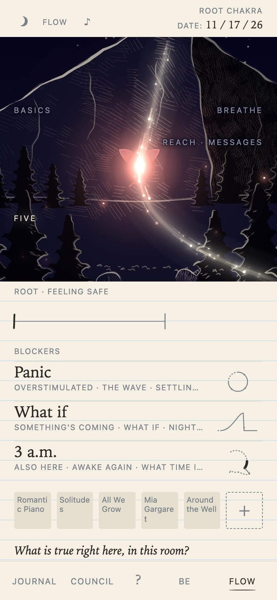
How this is built
| Where | ui/flow/chakra/Blockers.tsx, mounted in ChakraPage under the gate, over the shelf. |
| Row | The Flow list's own row (.fl-flow): name, step words, Cycle small. |
| Reads | blockersOf(chakra): flows whose chakra or alsoUnder names the sign, minus struck ones. |
| Plan | PLAN-BLOCKERS.md sections 3 and 5. |
A tap opens its drawing
The old diagram is back, one tap under its sign.
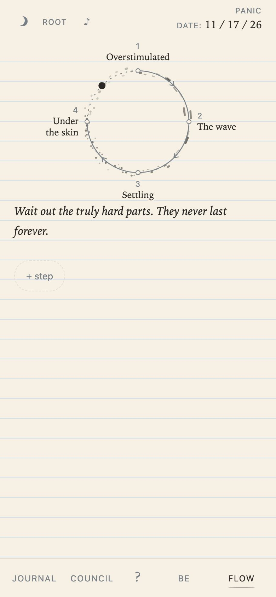
How this is built
| Route | #/flow/:id draws FlowPage again for a flow under a sign; the way back is the sign. |
| Leaves the sign | The step words line and the rows a flow in front put on ChakraPage. |
| Travel | The small drawing to the large one, parts/Turn (rule 28). |
I walk it as before
A step word reads that step; the dot moves when it is happening.
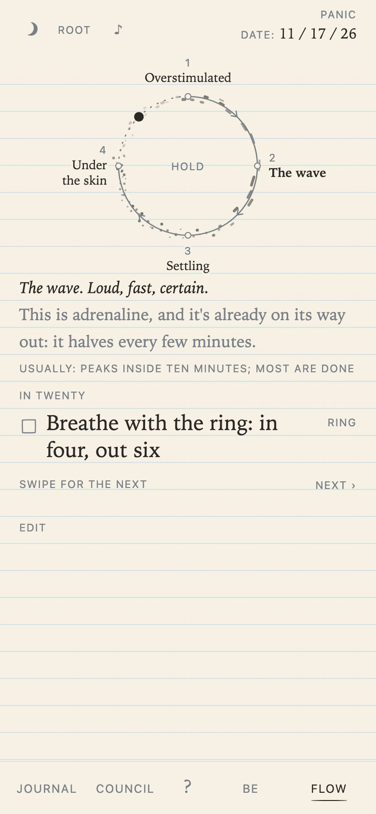
One that is running shows where I am
The dot sits on its small drawing, and that row comes first.
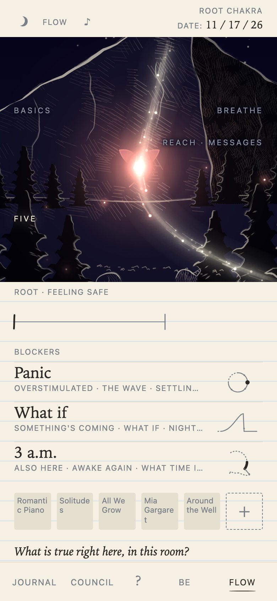
I decide what stays
Edit strikes a blocker off this sign; the flow itself is kept.
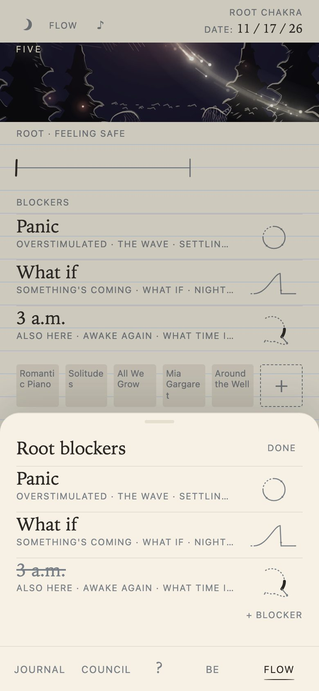
How this is built
| Data | Flow.offSigns?: ChakraId[], clear, optional. No schema bump. |
| Struck | A drawn stroke through the name (rule 10); a tap puts it back. |
| + blocker | NewFlow with this sign already chosen. |
The candidates, sign by sign
Eight old drawings, three that also fit a second sign, six new ones.
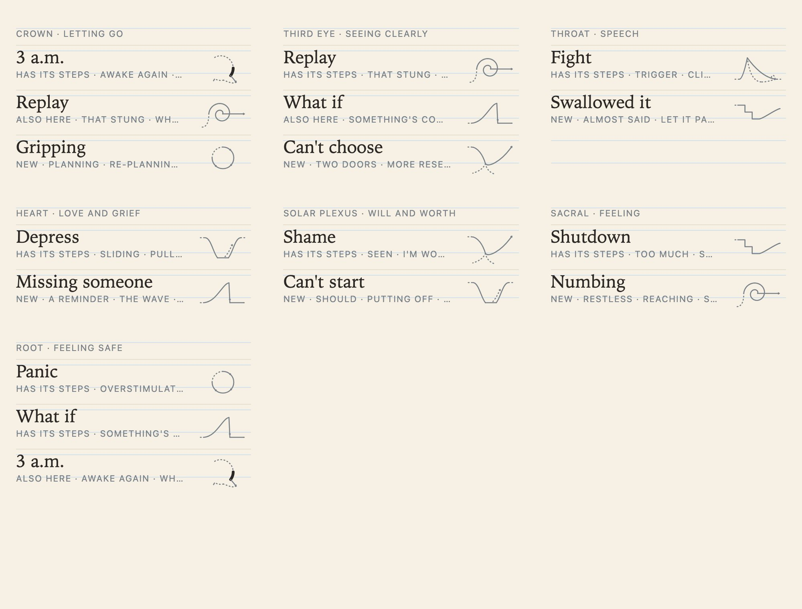
How this is built
| Has its steps | Seeded today with steps, tips and a drawing. |
| Also here | The same flow listed under a second sign: Flow.alsoUnder. |
| New | Name, shape and step words only; steps get written for the ones kept (package K5). |
Questions to ponder, under the shelf
Three show at a time, from a deck of seven a sign.
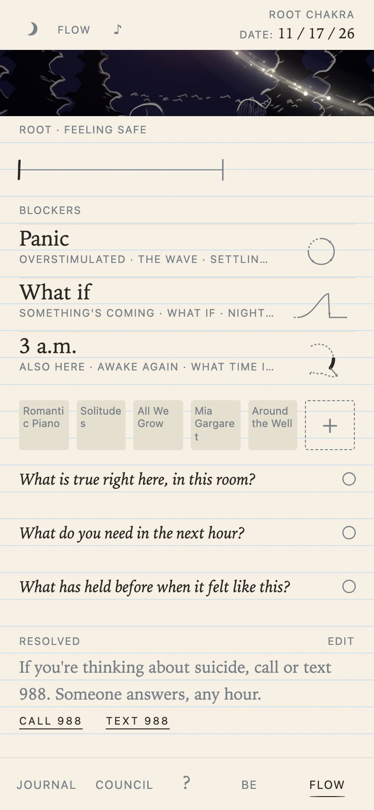
How this is built
| Data | signShelves.deck?: { id, text, resolvedAt? }[], sealed like asks. No schema bump. |
| Starters | The three there today plus four more a sign: PLAN-BLOCKERS.md section 6. |
| A tap on the words | Unchanged: today's journal page opens on the question. |
A tap on the ring resolves one
The ring fills, the words go grey, and the next question comes up.
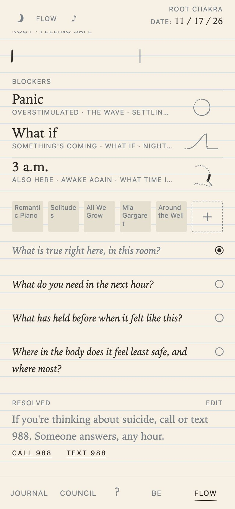
How this is built
| Part | parts/Resolve.tsx: an open ring, a thumb wide, at the right of the question's first rule. |
| Motion | The dot is drawn over --t-draw with the check's tick (rules 19 and 27). |
| Model | resolveAsk(chakra, id, on). |
Resolved keeps them, dated
A tap on a filled ring brings one back.
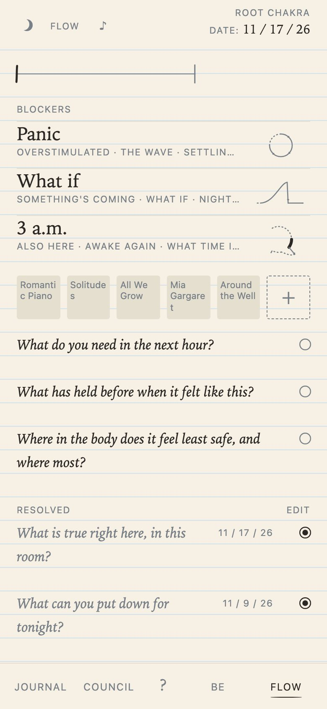
Edit holds the whole deck
I rewrite any, and add my own on the last rule.
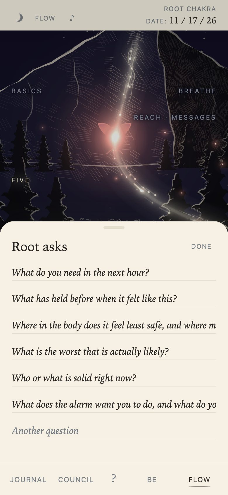
Or resolve it where I answered it
The question carries its ring onto today's page.
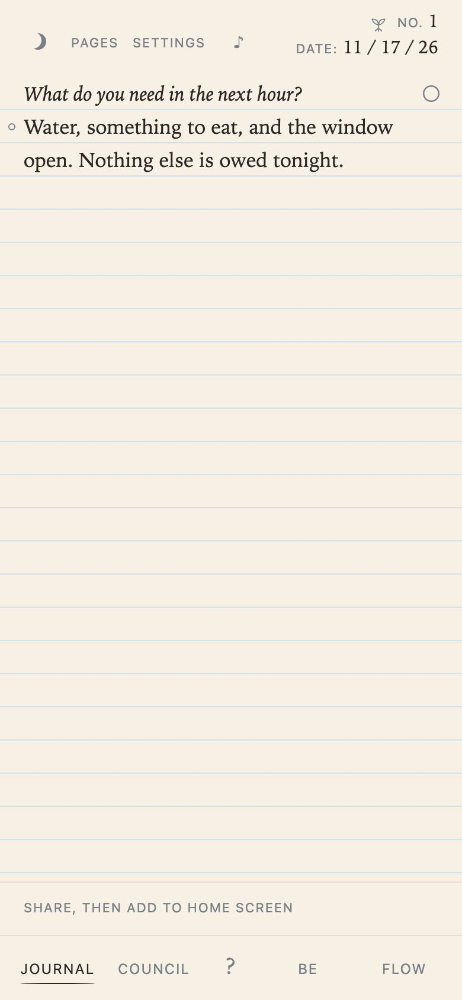
How this is built
| How | A wise line on a page linked to a sign whose words are an open question of that sign draws the ring. |
The same ring on the ? tab
One tap moves a question under Resolved.
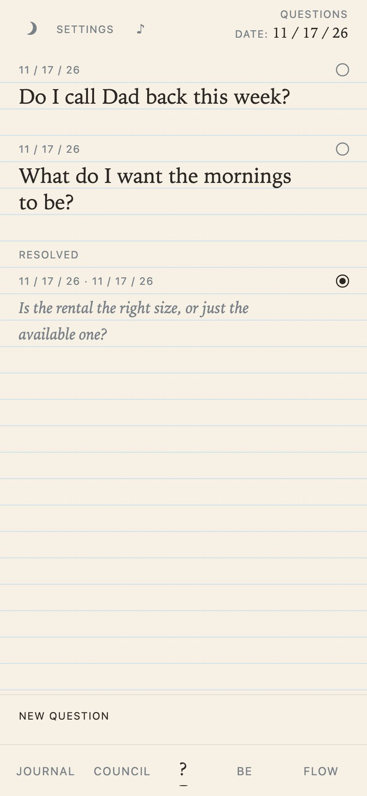
How this is built
| Model | resolveQuestion(id, on) in model/pages.ts: state, answeredAt, and resolvedByTap so unmarking a line does not reopen it. |
| Kept | "This answers it" on a held line still resolves, and marks the line. |
| Word | The label "Answered" becomes "Resolved". |
And on a question's own page
The ring sits by the title; no long press needed.
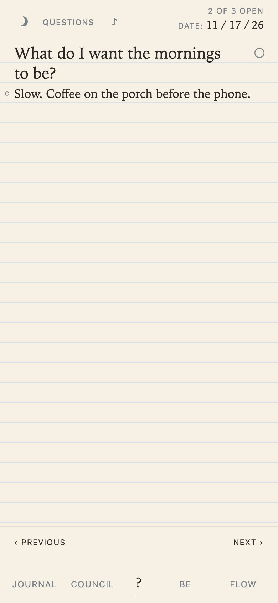
In Still, none of it
No blockers, no questions, no rings.
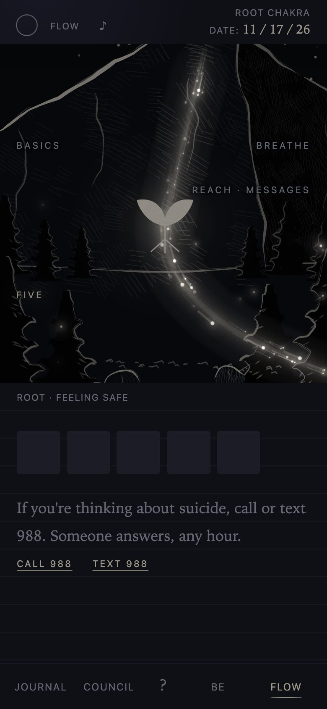